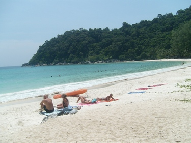
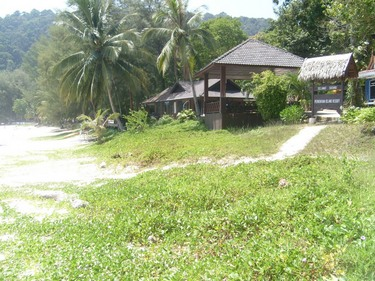

Kuala Lumpur | Penang | Malacca | Kota Bharu | Cameron Highlands | Perhentian Islands | Survival Malay
Visiting Perhentian islands (Pulau Perhentian)
The Perhentian islands (Pulau Perhentian)
After the invigorating mountain air at Cameron Highlands how about some bracing sea air? From Cameron Highlands it is possible to go to the Perhentian islands, called Pulau Perhentian by the local folks (pulau meaning "island" in Malay) by mini bus with one of the local tourist agencies (see bus time-table below). You might want to consider this option if you want to bypass Kota Bharu which is how most visitors go to the Perhentian islands and avoid the hassle of having to arrange for a boat by yourself when you arrive at the take-off jetty at Kuala Besut.
People heading for the Perhentian islands usually spend a night in Kota Bharu, then take a taxi to the Kuala Besut jetty next morning (the taxi ride takes about 1 hour and 15 minutes), from where they can take a boat to one of the two islands, famous for their crystal-clear waters and fine sand. The motor boats go at a terrific speed so be prepared for a bumpy ride if the waters get a bit rough. The sea there abounds with corals, making snorkelling, even for absolute beginners, an interesting occupation as there is so much to see beneath the sea waters. If you should join one of the snorkelling trips, you will first be shown how to breathe through your mouth with the snorkel and then you will be taken to specific spots by motor-boat where, from your floating face-downward position in the sea, you will be able to see sea turtles and even sharks - but don't worry, the sharks you see here are not dangerous.
(By the way, you don't need to be a great swimmer to take part in the snorkelling trips).
 | | Buses run to all parts of Malaysia from Cameron Highlands - to Kuala Lumpur and Penang of course, but also to Taman Negara for the national wildlife park, to Kuala Besut, or all the way to Pulau Perhentian (with the boat trip included), to Gua Musang and to Kota Bharu. (Click to enlarge.) |
 | | The jetty at the bigger of the two Perhentian islands. The sea on this part of the island is really ideal for swimming as the water here is crystal-clear and clean and the beach is covered with fine, white sand. |
 |  |
| Two more views of the stretch of fine, sandy beach near the principal jetty at Pulau Perhentian Besar.
|
|


{kind=link}
{kind=link}
{kind=link}
{kind=link}
{kind=link}